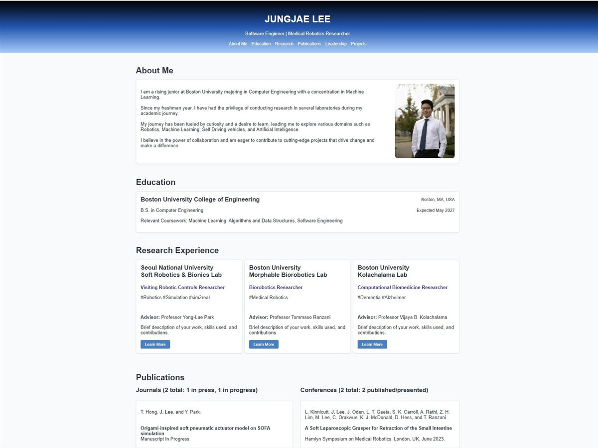
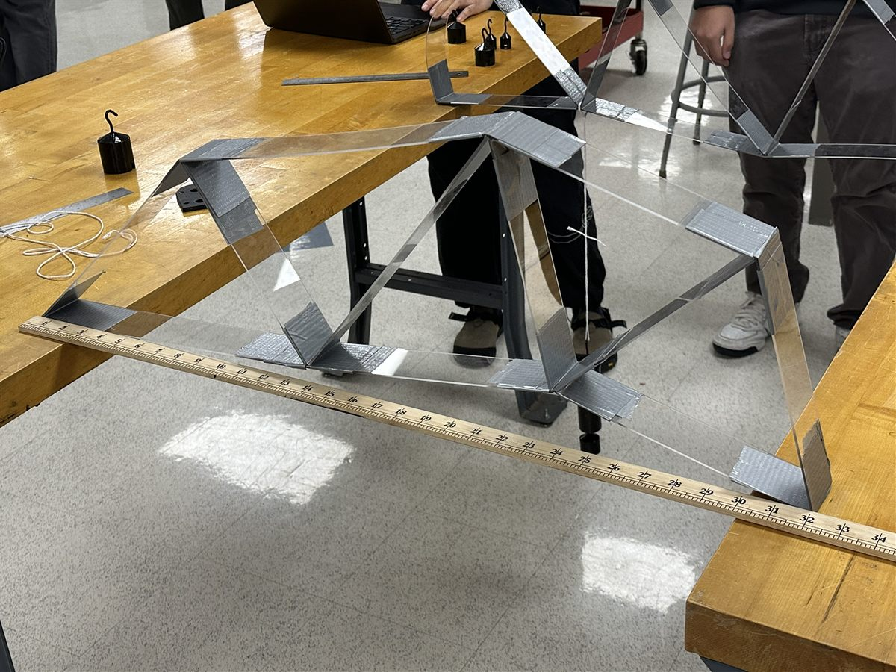
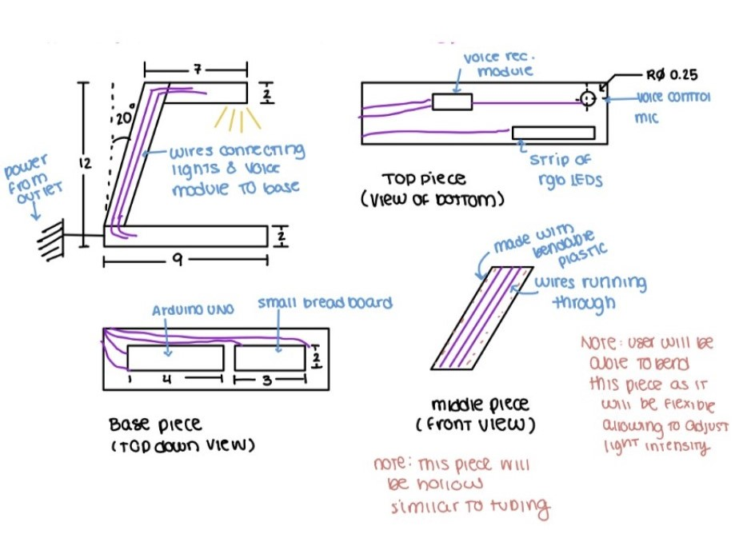
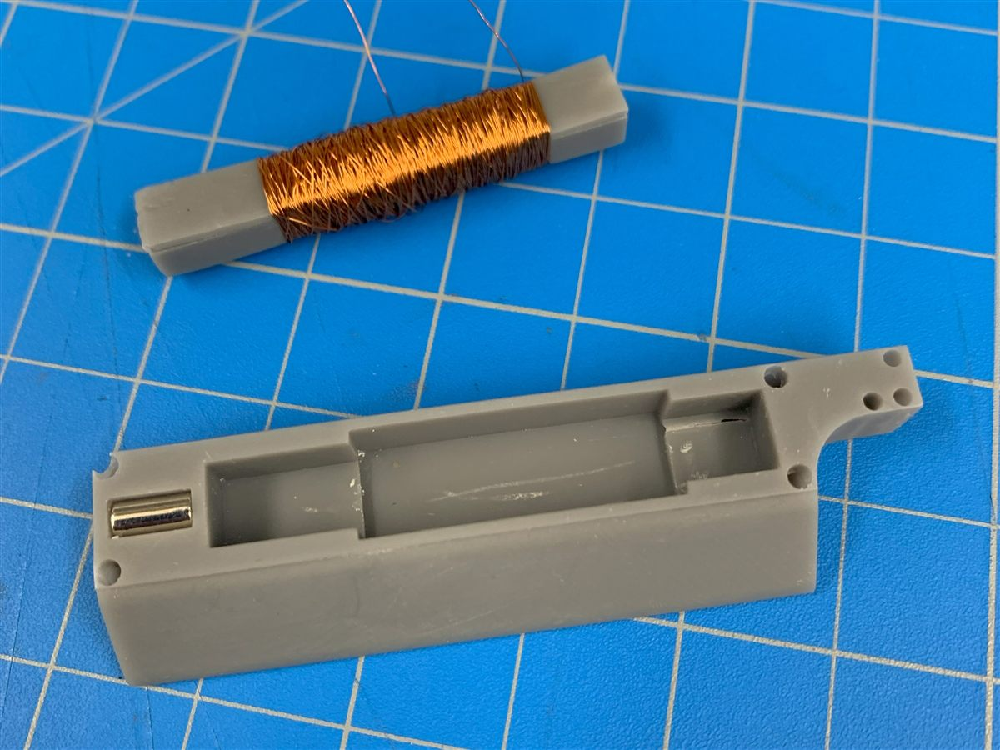
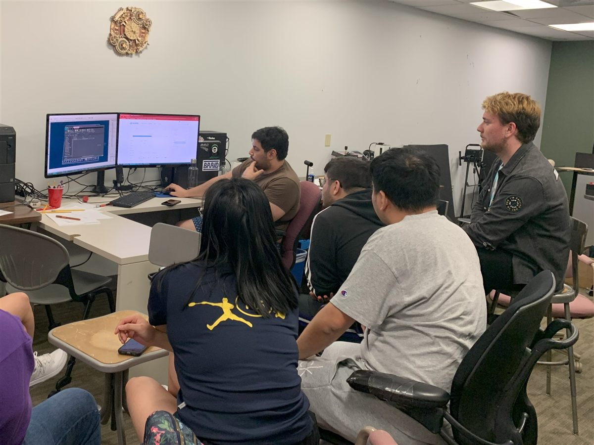
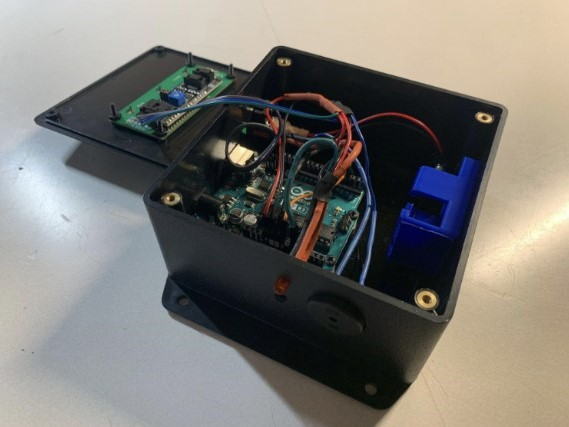
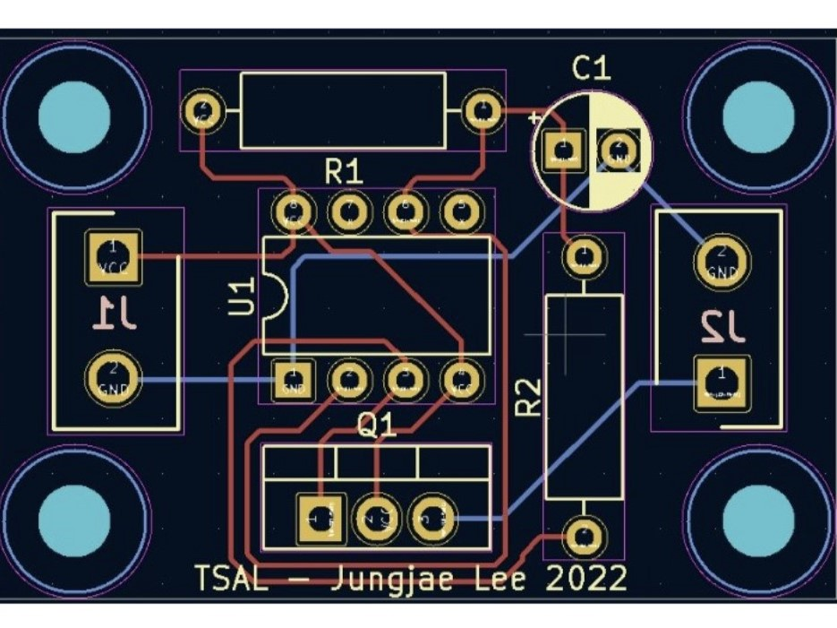

Boston University
B.S. in Computer Engineering | Concentrations in Robotics and Machine Learning
Expected May 2027 - Boston, MA, USA
Expected May 2027
Boston, MA, USA
Computer Engineering student at Boston University
I am a Computer Engineering student at Boston University with concentrations in Robotics and Machine Learning.
My research spans robotic perception, planning, control, simulation, soft robotic systems, and applied machine learning for autonomous systems and real-world robotic platforms.
During my undergradaute studies, I have contributed to research at Carnegie Mellon University (2026), Seoul National University (2023, 2025), and Boston University (2022, 2023). My experience includes autonomous robot intelligence, soft-robot simulation, medical soft robotics, and computational biomedicine. I am particularly interested in building systems that connect simulation, planning, control, and physical robot deployment.

B.S. in Computer Engineering | Concentrations in Robotics and Machine Learning
Expected May 2027 - Boston, MA, USA
Expected May 2027
Boston, MA, USA

Visiting Undergraduate Researcher - Carnegie Mellon University
May 2025 - Present - Pittsburgh, PA
May 2025 - Present
Pittsburgh, PA

Visiting Undergraduate Researcher - Seoul National University
Apr 2025 - Aug 2025 - Seoul, Korea
Apr 2025 - Aug 2025
Seoul, Korea
Visiting Undergraduate Researcher - Seoul National University
May 2023 - Nov 2023 - Seoul, Korea
May 2023 - Nov 2023
Seoul, Korea
Undergraduate Researcher - Boston University
Mar 2023 - May 2023 - Boston, MA
Mar 2023 - May 2023
Boston, MA
Undergraduate Researcher - Boston University
Jan 2022 - May 2023 - Boston, MA
Jan 2022 - May 2023
Boston, MA

T. Hong, J. Lee, B. Song, and Y.-L. Park.
Advanced Intelligent Systems, 2025. Published. DOI: 10.1002/aisy.202500696.
The paper connects high-fidelity simulation and physics-based learning through a surrogate model for soft robot control.

L. Kinnicutt, L. T. Gaeta, J. Rogatinsky, J. Lee, A. Cameron, A. Naik, D. Hess, and T. Ranzani.
Device, Volume 2, Issue 10, 2024. Published.
The paper presents a modular soft robotic laparoscopic grasper designed for atraumatic small-intestine retraction.
L. Kinnicutt, J. Lee, J. Oden, L. T. Gaeta, S. K. Carroll, A. Rathi, Z. H. Lim, M. Lee, C. Orakwue, K. J. McDonald, D. Hess, and T. Ranzani.
Hamlyn Symposium on Medical Robotics, London, UK, 2023. Presented.
This presentation describes a soft laparoscopic grasper for small-intestine retraction in medical robotics.
Status: Under review, as listed in the source portfolio.
The manuscript concerns instruction-aware graph path planning and navigation using OpenStreetMap.

Status: Manuscript in progress, as listed in the source portfolio.
The manuscript is listed as work in progress on humanoid mobile-manipulation reasoning.

A catheter-delivered soft robotic prototype for controllable aortic occlusion using inflatable soft actuators and an internal deployable brace.
In-progress course project listed in the prior portfolio. Public technical details, repository links, and results were not available in the source material.
Cloud Computing
In-progress deep learning project listed in the prior portfolio with Python and Isaac Sim as verified technologies. Additional scope and outcomes were not publicly described.
Python - Isaac Sim
In-progress robotics course project listed in the prior portfolio. Raspberry Pi is the only verified technology detail currently available from the public source.
Raspberry Pi

Implemented operating-system components supporting threads, virtual memory, user programs, and file systems. The project emphasizes systems programming, low-level C implementation, and operating-system abstractions.
C - Operating Systems - Virtual Memory - File Systems
Developed components for a Go 1 robot dog workflow including natural language interaction, map generation, localization support, and temporary GPS tracking. Jungjae's contributions included STT/TTS integration, intent parsing, ROS bag processing, SLAM map cleanup, and Android GPS data collection support.
Python - ROS - Linux - Git - SLAM - STT/TTS

Authored a technical handbook for using QGIS and MATLAB to set map checkpoints and support path implementation for autonomous driving competition objectives. The project connected map preparation, checkpoint generation, and autonomous vehicle team workflow documentation.
MATLAB - QGIS - Path Planning - Autonomous Vehicles
Supported simulation workflows for soft robot system identification. Jungjae optimized simulation meshes, implemented SOFA structures for deformation modeling, and evaluated simulation setup choices against tools including MuJoCo and Gazebo.
SOFA - MuJoCo - Python - Linux - Git

Designed a user interface that accepts two labeled image directories and visualizes averaged image datasets. The project combined software engineering, image processing, and machine learning-oriented data exploration.
C++ - Python - MATLAB - Machine Learning

Designed and built an engineering portfolio using static web technologies.
HTML - CSS - JavaScript

Engineered a truss bridge with structural analysis and optimization to achieve maximum load capacity.
MATLAB

Led redesign and manufacturing of combat shirts with integrated tourniquet attachments, with the prior portfolio reporting reduced application time to 5 seconds.
CAD

Developed a GUI for remote vehicle navigation management and real-time location monitoring from a centralized control room.
GUI - Python

Prototyped a custom desk lamp for users with ADHD and autism, using adaptive light-spectrum adjustments, accessible switches, and flexible materials.
Arduino - CAD - Soldering

Developed a 2D game with real-time interactions, command handling, and an object-oriented MVC architecture.
C++ - Python - MATLAB

Explored magnetic flux and magnetic momentum concepts while designing and testing a helicopter wing concept and rechargeable-battery idea.
Magnetics - 3D Printing

Conducted FMEA to identify potential failures and frequencies for vehicle safety standards and preparedness.
Analysis

Designed first and second SolidWorks prototypes for a robotics end effector, prioritizing functionality and durability for system compatibility.
CAD - SolidWorks

Designed a custom gavel with a functional pen holder and an engraved name plate using manual lathes and CNC milling.
Lathes - Milling

Built an Arduino-based room temperature monitor with LCD output, alarm behavior, thermistor sensing, and a custom 3D-printed battery box.
MATLAB - Arduino - 3D Printing - Soldering - Circuit Design - CAD

Designed a KiCad PCB to power a red flashing lamp operating at 3 Hz for high-voltage status indication above the driver.
PCB - Circuit Design - Soldering

Analyzed relationships between healthcare access in low-income families and causes of death using MATLAB and machine learning.
MATLAB - Machine Learning - Data Analysis

Collected acceleration data from three elevators at Boston University Warren Towers and used MATLAB to compute maximum and minimum force.
MATLAB - Data Analysis